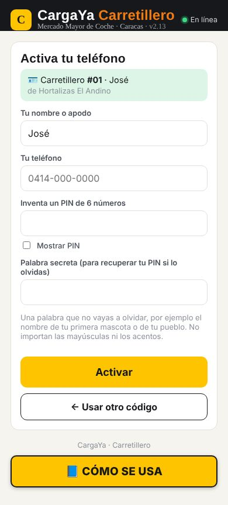
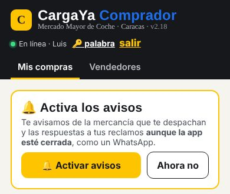
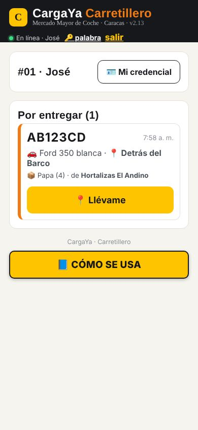
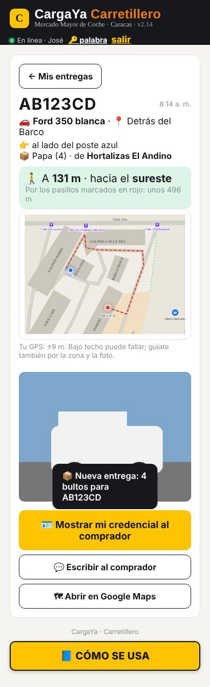
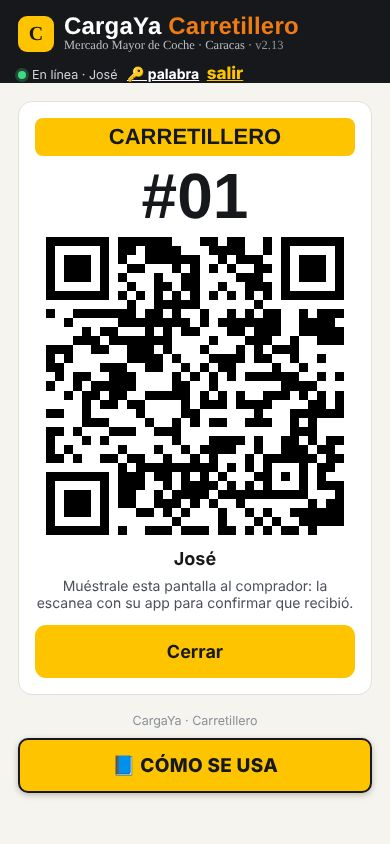

Con CargaYa Carretillero ves tus entregas en el teléfono y el GPS te lleva hasta el vehículo del comprador. Tu vendedor activa tu teléfono con un código.
1Activa tu teléfono
- Pide a tu vendedor que te muestre el código: Mis carretilleros → 📱 Activar su teléfono.
- Escanéalo con la cámara de tu teléfono y abre el enlace (o abre CargaYa Carretillero, toca Activar mi teléfono y escribe las letras).
- Revisa que diga tu número de carretillero.
- Escribe tu teléfono, inventa un PIN de 6 números y una palabra secreta, y toca Activar.
💡 El código sirve una sola vez y vence en 48 horas. Si vence, pide otro.

2Instala el ícono
- Al activar aparece “Instala el ícono”: tócalo y acepta.
- Así abres CargaYa Carretillero con un toque, como cualquier aplicación.
3Activa los avisos 🔔
- Al entrar aparece la tarjeta 🔔 Activa los avisos: toca Activar avisos y luego Permitir.
- Desde ese momento te llegan avisos de cada nueva entrega aunque la app esté cerrada, como un WhatsApp. Al tocar el aviso se abre la app.
- En iPhone: primero instala la app (Safari → Compartir → Añadir a inicio) y ábrela desde el ícono; necesita iOS 16.4 o más nuevo.
💡 Si no te llegan con la app cerrada: en Ajustes del teléfono → Aplicaciones → Chrome (o CargaYa) → Batería, elige Sin restricciones. Si tocaste “Bloquear”, toca el candado junto a la dirección → Notificaciones → Permitir.

4Mis entregas
- Cuando un vendedor te asigna una carga, suena un aviso y aparece en Por entregar.
- Ves la foto del vehículo, la placa, la zona, lo que llevas y de qué vendedor es. Tocando la foto también se abre el camino.
- Abajo, Hoy muestra las que ya recibió el comprador.

5Llévame: el GPS te guía
- Toca 📍 Llévame en la entrega.
- El punto azul eres tú; el rojo, el vehículo del comprador. Arriba ves cuántos metros faltan y hacia dónde.
- La línea roja es el camino por los pasillos del mercado.
- Mira la foto del vehículo y la referencia para encontrarlo rápido. Si no lo ves, toca 💬 Escribir al comprador.
💡 Acepta el permiso de ubicación. Bajo techo el GPS puede fallar unos metros: guíate también por la zona y la foto.

6Entrega y muestra tu credencial
- Al llegar, toca 🪪 Mostrar mi credencial al comprador.
- El comprador la escanea con su app y confirma que recibió.
- La entrega pasa sola a Hoy · ✅ Recibido.
💡 Tu credencial impresa sigue sirviendo igual: el comprador puede escanear cualquiera de las dos.

7¿Olvidaste tu PIN?
- Abre CargaYa Carretillero y toca Ya tengo cuenta.
- Toca 🔑 ¿Olvidaste tu PIN? Recupéralo aquí.
- Escribe tu teléfono y tu palabra secreta, e inventa un PIN nuevo.
💡 Si no recuerdas la palabra, pide a la administración que te cambie el PIN.